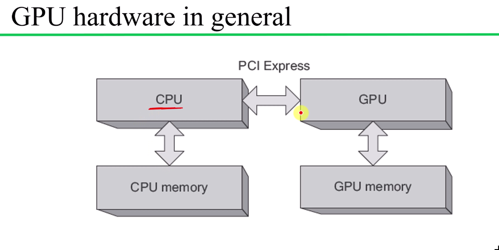
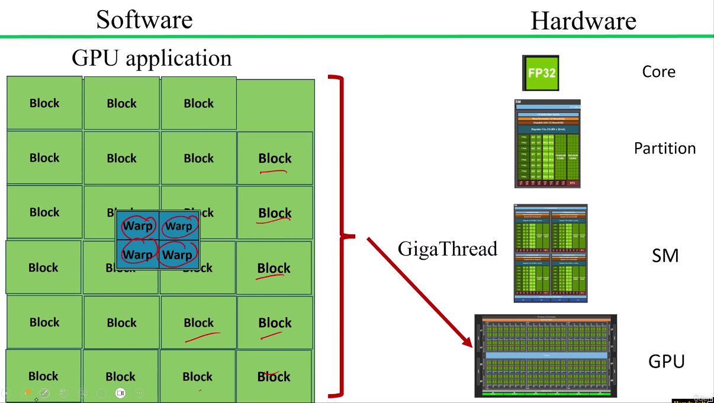
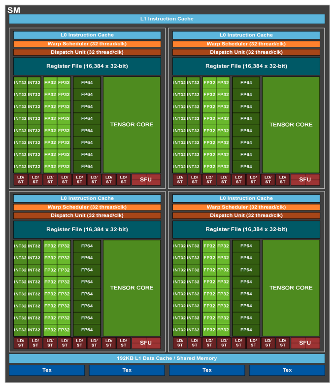
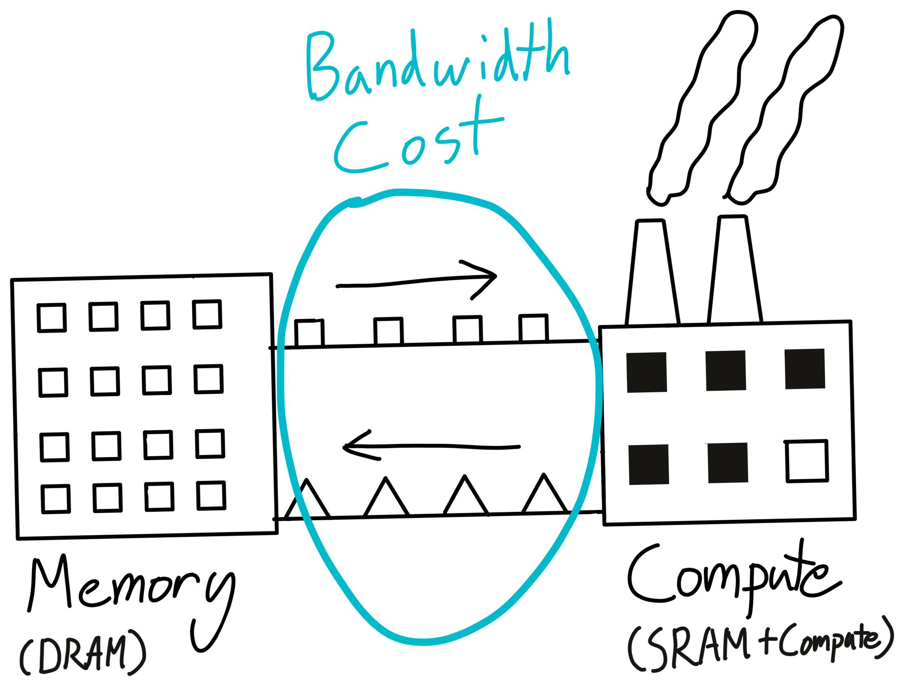
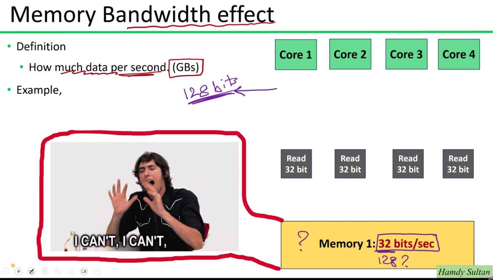
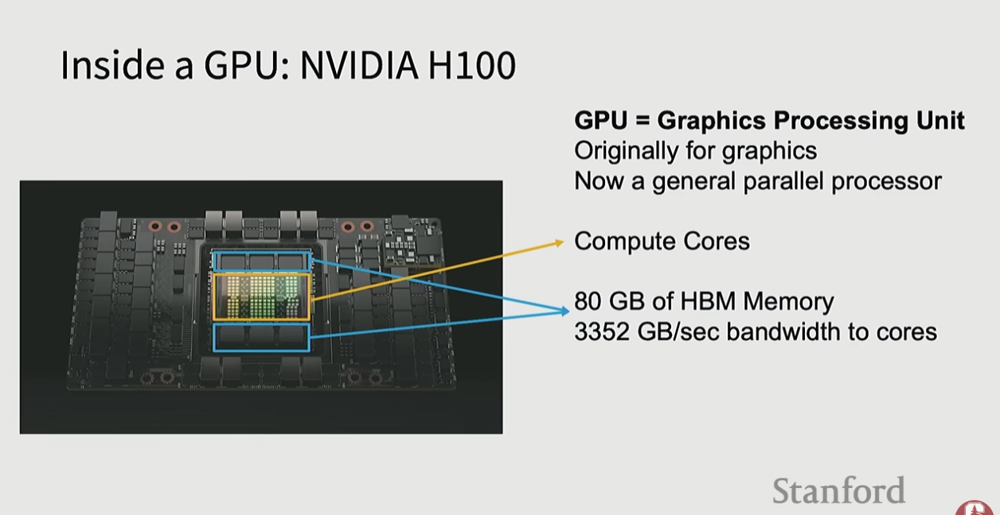

GPUs are massively parallel processors that power modern deep learning, graphics, and simulation. CUDA is NVIDIA's programming platform for running computations on their GPUs. Understanding kernels, warps, memory movement, compute capabilities, and starter C/CUDA code patterns is essential for debugging performance and model-loading issues.
A kernel is a function that runs on the GPU — highly parallelized across thousands of cores simultaneously. Deep learning operations (matrix multiplications, attention, convolutions) are all implemented as CUDA kernels.
When PyTorch runs an operation:
hello_from_gpu<<<2, 64>>>();That launch means one grid launch, two thread blocks, and 64 CUDA threads per block. Since NVIDIA warps contain 32 threads, the example creates two warps per block and four warps total. The kernel prints blockIdx.x, threadIdx.x, and a local warpId = threadIdx.x / warpSize, then waits for GPU work with cudaDeviceSynchronize().
Meaning: The PyTorch build doesn't include compiled kernels for your GPU's architecture. Fix options: (1) install a PyTorch version that supports your GPU, (2) build from source for your specific architecture, (3) use CPU inference.
| Format | Security | Speed | Portability |
|---|---|---|---|
pytorch_model.bin | Can execute Python on load (unsafe) | Slower (deserialization) | PyTorch only |
.safetensors | Cannot execute code (safe) | Faster (memory-mapped) | Multi-framework |
The CUDA course source in src/section_03/ moves from launch topology to memory movement and chunked processing.
| File | Demonstrates | Core pattern |
|---|---|---|
hello_cuda.cu | Kernel declaration, launch configuration, block/thread IDs, warp IDs | __global__ function launched with <<<2, 64>>>; each thread prints its block, thread, and warp identity |
vector_addition.cu | Basic host/device memory flow | malloc host arrays, cudaMalloc device arrays, cudaMemcpy host-to-device, launch, copy device-to-host |
vector_addition_2.cu | Global thread indexing and timing | blockIdx.x * blockDim.x + threadIdx.x plus cudaEventRecord and cudaEventElapsedTime |
vector_addition_3.cu | Chunked processing for larger inputs | Keep device allocations at one chunk, loop over offsets, copy each chunk to the GPU, launch, then copy the result chunk back |
CMakeLists.txt | Reproducible CUDA builds | Enable the CUDA language, default CMAKE_CUDA_ARCHITECTURES to native, and compile one executable per .cu example |
The most important step is moving from a single-block teaching kernel:
int i = threadIdx.x;to a grid-wide index:
int i = blockIdx.x * blockDim.x + threadIdx.x;if (i < n) before reading or writing arrays, because real workloads often use rounded-up grid sizes.CUDA programs are split across host and device. The host is CPU-side code and system memory. The device is GPU-side kernels and GPU memory. PCIe or NVLink moves data between them.

| CUDA concept | Hardware role |
|---|---|
| Grid | One kernel launch's full work set |
| Thread block | A programmable group of threads assigned to one SM |
| Warp | 32 NVIDIA threads scheduled together |
| SM | Streaming multiprocessor that runs resident warps |
| GigaThread engine | Global scheduler that assigns blocks to SMs |

A block is the programmer's logical grouping, but the warp is the hardware execution unit. NVIDIA GPUs execute a warp in SIMT style: one instruction is issued across 32 lanes while each thread keeps its own registers and program state.
The CUDA Toolkit provides nvcc, runtime libraries, headers, debuggers, profilers, and domain libraries such as cuBLAS, cuDNN, cuFFT, and cuRAND. nvcc separates host code from device code, sends host C++ to a normal C++ compiler, sends device code through NVIDIA's CUDA pipeline, and links the executable.
PTX is NVIDIA's virtual GPU instruction set. CUDA source can compile to PTX and/or SASS machine code. PTX gives some forward compatibility because a compatible driver can JIT-compile it for the installed GPU, while SASS is already compiled for a specific sm_XX target.
An SM keeps many warps resident. When one waits on memory, a scheduler can issue another ready warp. Oversubscription hides latency; it does not reduce an individual access's latency.
Registers, shared memory, and block size limit resident warps. More occupancy provides scheduling choices, but maximum occupancy is not automatically maximum performance.
Operations per byte moved separates bandwidth-bound from compute-bound work. Tiling, reuse, and fusion increase useful work per transfer.
Adjacent lanes should access adjacent addresses. Strided or scattered requests waste memory transactions and effective bandwidth.


Each GPU generation has a compute capability code (sm_XX) that identifies its supported CUDA features. It is not a direct speed score; it controls supported instructions, memory operations, toolkit compatibility, and compilation targets.
| GPU Family | Architecture | Compute Capability | Code |
|---|---|---|---|
| GTX 900 | Maxwell | 5.2 | sm_52 |
| GTX 10xx (Pascal) | Pascal | 6.1 | sm_61 |
| RTX 20xx | Turing | 7.5 | sm_75 |
| RTX 30xx | Ampere | 8.6 | sm_86 |
| RTX 40xx | Ada Lovelace | 8.9 | sm_89 |
| H100 | Hopper | 9.0+ | sm_90 |
Two cards with similar silicon can perform differently because of enabled core count, clock speed, memory bandwidth, power limits, cooling, firmware settings, cache hierarchy, and precision-specific throughput. Architecture changes also matter: Tensor Cores, for example, made matrix math far faster than Pascal-era CUDA cores alone.

The H100 is the reference training GPU in many large-scale systems:

The core formula for estimating how much VRAM a model requires:
VRAM (GB) ≈ Parameters (billions) × (bits per weight ÷ 8)| Format | Bits | GB / 1B params |
|---|---|---|
| FP16 / BF16 | 16 | ~2.0 GB |
| FP8 / INT8 | 8 | ~1.0 GB |
| 4-bit quants | 4 | ~0.5 GB |
| GGUF Q6_K | ~6.6 | ~0.82 GB |
| GGUF Q5_K | ~5.5 | ~0.69 GB |
| GGUF Q4_K | ~4.5 | ~0.56 GB |
| GGUF Q3_K | ~3.5 | ~0.43 GB |
| GGUF Q2_K | ~2.6 | ~0.33 GB |
Weights are only part of your VRAM budget:
Mixture-of-Experts (MoE) models confuse people: "8×7B" sounds like 56B, but only a subset of experts activate per token. Total parameters → memory footprint. Active parameters → compute cost (speed). You may still need to load all experts into VRAM unless you shard across GPUs.
Required memory ≈ checkpoint_size × 1.1 to 1.3Example: model.safetensors = 1.62 GB → Runtime ≈ 1.62 × 1.3 ≈ 2.1 GB. The extra accounts for activation buffers, optimizer states, and framework overhead.
When a model is too large for a single GPU:
| Strategy | What is split | Use case |
|---|---|---|
| Data parallelism | Same model on each GPU, different batches | Default for smaller models |
| Tensor parallelism | Individual weight matrices split across GPUs | Very large layers |
| Pipeline parallelism | Model layers split across GPUs | Long models, many layers |
| Context parallelism | Sequence/attention computation split | Long context windows |
Rankings by software maturity, VRAM, perf/W & perf/$, multi-GPU scaling, reliability, and availability.
| GPU | VRAM | Why |
|---|---|---|
| NVIDIA H100 | 80 GB | FP8/BF16 monster, NVLink/NVSwitch scale, MIG tenancy |
| NVIDIA RTX PRO 6000 Blackwell | 96 GB | Single-slot Blackwell, 4,000 AI TOPS & 1,792 GB/s bandwidth |
| NVIDIA A100 | 80 GB | Stability benchmark, mature stack, MIG support |
| Tenstorrent Blackhole p150a | 32 GB | RISC-V AI SoC, >2.5 TFLOPS/W |
| GPU | VRAM | Why |
|---|---|---|
| NVIDIA GeForce RTX 5090 | 32 GB | Top consumer perf/$ with 32 GB GDDR7 |
| NVIDIA L40S | 48 GB | Ada datacenter card with FP8, graphics & media blocks |
| NVIDIA RTX 6000 Ada | 48 GB | ECC workstation champ for dual/quad builds |
| NVIDIA GeForce RTX 4090 | 24 GB | Huge community support; stellar perf/$ for solos |
| Budget | NVIDIA | Tenstorrent | AMD |
|---|---|---|---|
| Budget ($2–3K) | RTX 4090 or 3090 | Wormhole n300d (used) | Radeon RX 8900 XT |
| Indie ($5–8K) | Dual 5090 / 4090 / RTX 6000 Ada | Twin Blackhole p150c | AMD PRO W9000 |
| Startup-Lab ($10–15K+) | 4× 5090 / 6000 Ada or 2× A100 | 4× Blackhole p150a mesh | 2× MI210 or 4× W9000 |